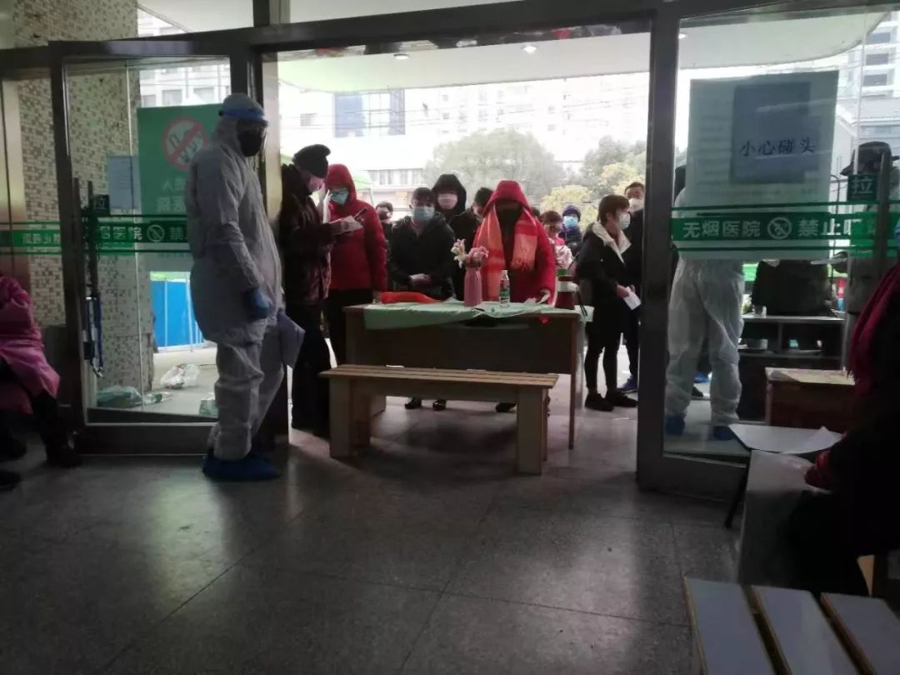
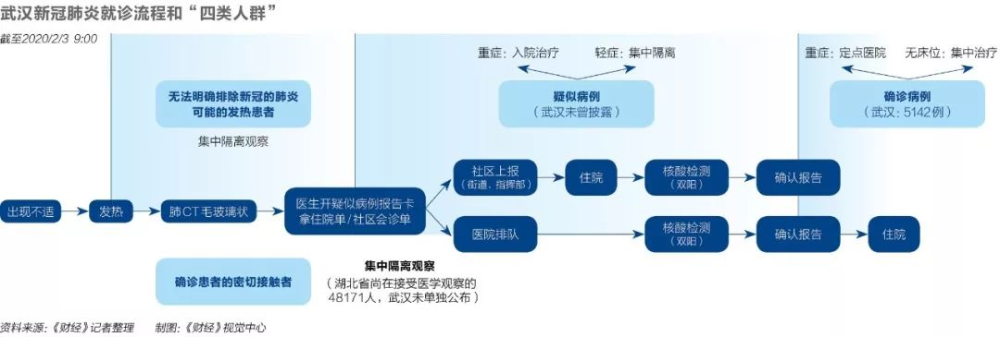
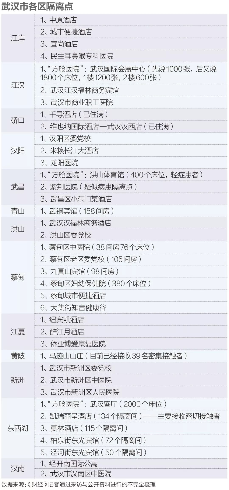

武汉新冠肺炎四类人员集中隔离，为何这么难？
原文链接 备份链接 为防止居家隔离造成交叉感染，从根本上控制感染源，武汉开始对确诊、疑似、发热及密切接触者进行集中收治和隔离。 具体执行中，劝服人员前往隔离点的工作很难。他们期待：能够对患者进行治疗，或者形成一条入院检测和就医的绿色通 …

在医学专家们看来，集中收留、隔离是第一步。接下来对疑似病患的确诊、分类诊治、收治入院，将是对医疗、物资、人员分配等多重资源配置能力的综合考验，相信各方面群策群力可以渡过难关

文 |《财经》记者 黎诗韵 高洪浩 房宫一柳 《财经》特派武汉记者 信娜 刘以秦 实习生马可欣
编辑 | 宋玮
2020年2月3日上午9时30分，陈薇收到了一条来自武汉协和医院的短信：“你于1月29日检测新型冠状病毒肺炎核酸结果如下：双阳（确诊）。”
多数人收到这条短信，心情可能是崩溃的。对于武汉那些“疑似患者”来说，这不算是一个坏消息，因为确诊意味着能住上医院了。他们不用再拖着疲惫的身体往返医院去打针，不用再凌晨去定点医院排队等待领核酸试纸。
2月2日，武汉市政府和卫健委采取了一系列新举措，缓解疑似患者的确诊难题。《财经》记者了解到，2月2日武汉新增了数家核酸试剂检测机构，分别是武汉大学人民医院、武汉市第七医院、普爱医院等。
也是在2月2日，武汉决定征用17家第四批、10家第五批定点医院，共包含床位2183个，当日火神山医院建成并交付了1000多张床位。3日，武汉又新建位于武汉国际会展中心、洪山体育馆和武汉客厅的三处“方舱医院”，提供3400张医疗床位，主要收治新冠肺炎的轻症确诊患者。
至此，武汉的床位短缺情况将有所缓解。
2月2日，武汉市新型肺炎防控指挥部发布第十号通告，决定自通告发布之日起，对“四类人员”集中收治和隔离。
这“四类人员”分别是：确诊的新冠肺炎患者、疑似的新冠肺炎患者、无法明确排除新冠肺炎可能的发热患者、确诊患者的密切接触者。其中，重症的确诊患者必须送定点医院，重症的疑似患者必须入院治疗，无法进入定点医院的确诊患者、无法入院隔离的疑似患者，需征用其他医院或酒店等集中隔离收治。
上述通告内容受到了各方面的普遍肯定。一位医疗工作者对《财经》记者说：“这是一个至关重要的举措，武汉终于做了，快落实吧！”
同时，外界高度关注的武汉火神山医院已经正式启用。据央视报道，2月4日上午首批入住了50位病人，许多患者将其视为获得救治的希望。一位医护人员告诉《财经》记者，轻症还是以社区配合在家隔离为主，火神山等医院将解决部分重症病患的需求。
2月3日，武汉新冠肺炎防控指挥部表示，正在追踪各类互联网平台法发布的本人或亲友的求助信息，目前已经跟进了135条，“病患已得到妥善安置。”
在接受《财经》采访的医学专家们看来，集中收留、隔离是第一步，接下来对疑似病患的确诊、分类诊治，将是对医疗、物资、人员分配等多重资源配置能力的综合考验，相信各方面群策群力可以渡过难关。

（点击可查看大图）
隔离点：接收任务重、准备尚不充分
一位护士解释，酒店目前只是观察隔离点，不能打针不能吃药，不能安排住院。
2月2日上午，武汉市新型肺炎防控指挥部发出通知，决定对确诊、疑似等“四类人员”集中收治和隔离。“我们没有被抛弃！”一位患者向《财经》记者回忆看到通知时的第一感受。
2月3日上午，家住武汉市硚口区某小区的居民王森，接到社区电话，通知她去酒店隔离。一周前她持续低烧，体温37.5℃左右，成为社区疑似新冠肺炎的重点关注对象。
等王森到达时，定点隔离酒店的房间快要住满了。王森排第48位，工作人员说还剩下28个房间。之后15分钟里，分别有三辆警车带着社区的发热病人来到该酒店，得知酒店没房后，又匆匆离去。
酒店门口的字条一目了然——「新冠肺炎隔离点」，这里将住进约140名发热病人，每人一个房间。大多数人入住时至少拎着两个包，有的还拿着盆，神情充满期盼。
《财经》记者了解到，武汉最近两天新启用的多个隔离点里，有的目前只负责隔离，并不都是医院的对接口。
一位现场医护人员说，两三天后，住在这里的人将统一进行核酸试剂盒检测。结果为阴性的人可以直接离开。确诊的病人里，轻症会继续在酒店隔离，重症需要去医院。
2月2日下午5时，罗忆心中的石头终于落地。他重病多日而寻医无门的哥哥，接到了社区卫生站的通知，当晚可以入住集中隔离点。
当晚8时，罗忆接到了社区卫生站司机的电话：“你哥哥需要离开集中隔离的酒店了。”他瞬间懵了。接着，发着超过39度的哥哥被送回家，社区卫生站劝慰家属：高烧严重，隔离点没有医生和检测设备，暂居家中为宜。
罗忆的哥哥被重新带上了车， 送到武汉市第一医院，排队做完新一轮检测，最后自己回到居所。
对于隔离点没有安排好相应的隔离措施，罗忆觉得有点遗憾。
根据2月2日发布的《社区发热病人集中留观点技术指南》，原则上每个留观点按每50人配备1医（最好是全科医生或呼吸科医生）1护，能交接班。如果发热者出现病情加重的现象，应立即向当地乡镇卫生院或社区卫生服务中心报告，同时立即送定点医疗机构进行隔离治疗、采样和检测。
一位区政府总值班室的工作人员向《财经》记者解释，隔离点正在实施过程中，医护人员需要从一线抽取，病人要住、要吃、要睡，各种条件需要一一弄好。
“在封城的情况下，做这些事情异常艰难。所以这是一个渐进推进的过程， “他说。

检测试剂：有的敏感度不高，需重复检测
_“检出来是阳性就一定是阳性，但检测出是阴性，则不一定是阴性。_”医生说。
无论是隔离点还是社区分流的安排，都无法绕过一个问题：多数医院需要病人确诊才能收治，而按目前的流程要求，确诊关键点在于试剂盒的检测容量。
一个好的趋势是，核酸确诊试剂的产能在放开，越来越多的疑似病患能尽快用上。武汉各区的隔离点，也成了很多疑似病患获取试纸的新通道。
据《财经》记者了解，目前武汉市新开放可做核酸检测的医院如下：
武汉大学人民医院，但前提是有其他医院的检测证明，疑似病人才可以做；普爱医院，两院区皆可做，需有症状及CT，需先去发热门诊开单；武汉第七医院，需要提前预约，预约成功后，过五天去做，目前免费；中山医院需预约，每日可做100例以上，医院有导医陪同；同济医院，2天出结果，费用300元；武汉中山医院，需要带上病历资料直接去医院找发热门诊开单检测，无需预约，建议上午去。
2月3日，国家卫健委高级别专家组成员、中国工程院院士李兰娟在接受媒体采访时表示，武汉目前检测试剂数量不够，因此不是每个人能够得到检测。“早发现、早诊断、早隔离、早治疗，目前在武汉还做不到，希望全国支持武汉。”
《财经》记者还了解到，在武汉一些医院，相关检测预约排队及检测周期仍然偏长，有的机构检测出来的“假阴性”率高，部分患者需要重复检测。
武汉大学中南医院急诊中心主任助理、急诊外科主任沈俊对《财经》记者说，在新冠肺炎的早期，由于有的试剂盒存在不确定性，有时毫无症状的患者核酸检测也是阳性，医院为了再次确认会进行“双阳检测”。但他认为，现在应当已经不需要了。
“现在了解到核酸试剂是特异性强，敏感性却不高，这意味着如果你检出来是阳性就一定是阳性，但是检测是阴性，则不一定是阴性。“他说。
如果病人第一次检测结果为阴性，这意味着，医生可能要再检验一次。
一位武汉定点医院的医生告诉《财经》记者，他见过肺CT表现为严重病毒性肺炎的患者，核酸两次检测都是阴性，最后转阳。他们医院核酸试剂的阳性率为45%。
之前在一些疑似病患口中，排上试剂盒检测堪比“中彩票”。而检测试剂盒并不能百分之百准确，需要重复检测，将延长患者住院的等待时间。这也导致一部分有着肺部CT磨玻璃状的高度疑似病患，因试剂结果呈阴性，而排不上床位。
沈俊的同事、中南医院影像科主任张笑春发了一则朋友圈，建议用CT影像作为目前新冠肺炎的主要依据。她见过一些起病隐匿、一次甚至多次核酸阴性、无任何临床症状的患者，造成了家庭聚集性的发病。张笑春建议，对CT影像阳性的患者都采取强制在酒店或它处隔离的方法。
据悉，张笑春的家人也有感染，她说一个医生家庭防护措施比普通市民要严格都如此，何况普通市民。
另一位医学专家对《财经》记者表示，即使文件已经做出规定，但今天的感染病例可能一时不能全部安置不来，还需时间，就需要加强居家防护。
床位：火神山和方舱医院都开始收治
“毕竟一切都在变好，那我希望会越来越好。”
在医疗资源紧张的武汉，床位主要是为已经确诊、或疑似的新冠肺炎患者准备的。
拥有床位，意味着有了专业的医护人员、专业的医疗设备支持，当病人出现突然、危险情况时，可以得到及时救治。这也是为什么许多病情转重的病人急求床位的原因。
武汉正在抓紧腾挪、新增能收纳中重症病人的医院床位。截止2月3日23:00，武汉全市定点医院病床已用8279，大于开放床位8199，武汉市卫健委表示，这是部分医院按“应收尽收”的要求，尽最大努力安排加床。床位仍是武汉市抓紧解决的重要问题。
2月4日上午10点，武汉洪山体育馆内。《财经》记者看到身穿城市管理局制服的工作人员进入开始封馆。之后，将会有90名医护人员负责这处医院内病人的日常监测与治疗，“医护人员一到位，就开始收治患者。”
一张被子一叠两折，一面垫在床板上，一面盖在身上，下面有电热毯。单人床旁边放着一套课桌椅，可以放个人用品。前来支援的医疗队有中南医院，志愿队有湘雅医院。
2月3日晚对于现场工作人员来说是难眠的一夜。一位施工人员说，他只眯了五十分钟，“然后被电话惊醒，不敢接，怕现场出什么事，赶紧坐起来跑到现场。”
2月4日上午，他们忙着搬运板材，将不同区域分隔，成为互不连通的隔离空间。医护人员工作区和病人区是分开的，他们各自拥有自己的生活区，可如厕、洗漱。
几位工作人员还在体育馆通道上方张贴标识，“二单元”。现场负责人介绍，每一个单元，代表一个病区，体育馆将有三个病区。医生及患者也有各自不同的通道，能够有效做到物理隔离。
“这是连夜手画的”，一位负责人现场摊开了社区图纸，他说“根本没时间用电脑出图纸。”据《财经》记者了解，临建医院的设计方为中南建筑设计，与雷神山医院相同。《财经》记者获悉，现场还需要新开一个发热门诊，改造预计在4日晚12点前完成。
在城市的另一边，武汉火神山医院已经竣工交付使用，从2月4日开始集中收治新型冠状病毒肺炎患者。医院总建筑面积3.39万平方米，编设床位1000张，开设重症监护病区、重症病区、普通病区，设置感染控制、检验、特诊、放射诊断等辅助科室。
火神山与雷神山医院加起来，共有2600张病床，有人担心床位是否足够？一位定点医院医生告诉《财经》记者，目前真正重症的患者数量并不多，大部分是轻症患者，可以自行在家隔离，或是社区统一安排隔离。
一位一线定点医院的医生告诉《财经》记者，火神山和雷神山医院开放使用后，可以有效缓解市区内医院的压力，确诊的重症病人可以立即转院，“我们就可以开放出病床给其他病患。”
“毕竟一切都在变好，那我希望会越来越好。“之前曾接受《财经》记者采访的李莉说。
（文中王森、罗忆、刘梅、李莉为化名）
本文为《财经》与腾讯新闻独家合作内容，谢绝转载。

▲点击图片查看更多疫情报道
责编 | 黄端 duanhuang@caijing.com.cn
本文为《财经》杂志原创文章，未经授权不得转载或建立镜像。如需转载，请在文末留言申请并获取授权。
原文链接 备份链接 为防止居家隔离造成交叉感染，从根本上控制感染源，武汉开始对确诊、疑似、发热及密切接触者进行集中收治和隔离。 具体执行中，劝服人员前往隔离点的工作很难。他们期待：能够对患者进行治疗，或者形成一条入院检测和就医的绿色通 …
原文链接 备份链接 在医学专家们看来，集中收留、隔离是第一步。接下来对疑似病患的确诊、分类诊治、收治入院，将是对医疗、物资、人员分配等多重资源配置能力的综合考验，相信各方面群策群力可以渡过难关 2月3号上午8点，人们在七医院门口排队等待核 …
原文链接 备份链接 有多少疑似？ 326份CT检查报告单，除了60份不发热的其他病例，剩下的266份CT报告，136例显示“肺部感染，呈多发磨玻璃样高密度影”。1月22日，湖北省新华医院放射科医生李云华手颤抖着数完，沉默了许久。这些前一 …
原文链接 备份链接 根据国家卫健委的通报，截至1月23日零点，共统计到国内新型冠状病毒感染的肺炎确诊病例571例，其中超过400例来自湖北。死亡17例，均来自湖北。此刻的武汉面临以下问题：试剂盒数量不够、确诊艰难、床位短缺、高度疑似患者 …
原文链接 备份链接 武汉市各区正在加紧把所有发热人员集中隔离，并进行全部发热人员的检测，目的是让疫情全部暴露出来，之后疫情防控也将从“攻坚战”转至“歼灭战” 图/法新 文 |《财经》特派武汉记者 言清 王小 编辑 | 王小 “今天的会非 …